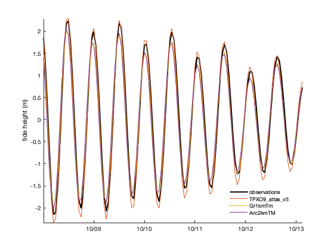

Tide Model Intercomparison
The primary purpose of this page is to verify that tide models have been converted to the consolidated NetCDF format correctly.
Contents
Tide height measurements near Skua Island, Antarctica
The plots on this page use the subsubplot function from Climate Data Toolbox (Greene et al., 2019) but you can easily replace them with MATLAB's built-in subplot function. The only difference is how much whitespace results.
% Load example tide gauge data (found in the doc/example_data folder.) fn = 'h700_skua.nc'; lat = ncread(fn,'lat'); lon = ncread(fn,'lon'); t = ncread(fn,'time')+datenum(1800,1,1,0,0,0); % units = 'days since 1800-01-01 00:00:00' sl = ncread(fn,'sea_level')/1000; % Predict tides at the tide gauge location: sl_tpxo = tmd_predict('TPXO9_atlas_v5.nc',lat,lon,t,'h'); sl_cats = tmd_predict('CATS2008_update_2022-06-11.nc',lat,lon,t,'h'); % Also predict tidal currents: % Predict tides at the tide gauge location: u_tpxo = tmd_predict('TPXO9_atlas_v5.nc',lat,lon,t,'u'); u_cats = tmd_predict('CATS2008_update_2022-06-11.nc',lat,lon,t,'u'); v_tpxo = tmd_predict('TPXO9_atlas_v5.nc',lat,lon,t,'v'); v_cats = tmd_predict('CATS2008_update_2022-06-11.nc',lat,lon,t,'v'); % Plot observed and predicted tides: figure subsubplot(3,1,1) p(1)=plot(t,sl-mean(sl,'omitnan'),'k','linewidth',2); hold on p(2)=plot(t,sl_tpxo,'linewidth',1); p(3)=plot(t,sl_cats,'linewidth',1); ylabel 'tide height (m)' legend('observations','TPXO9_atlas_v5','CATS2008_update_2022-06-11',... 'interpreter','none','location','best') legend boxoff box off axis tight xlim([725709.92 725724.55]) datetick('x','keeplimits') % Plot tidal currents: subsubplot(3,1,2) hold on plot(t,u_tpxo,'linewidth',1,'color',p(2).Color); plot(t,u_cats,'linewidth',1,'color',p(3).Color); ylabel 'zonal velocity (m/s)' box off axis tight xlim([725709.92 725724.55]) datetick('x','keeplimits') subsubplot(3,1,3) hold on plot(t,v_tpxo,'linewidth',1,'color',p(2).Color); plot(t,v_cats,'linewidth',1,'color',p(3).Color); ylabel 'meridional velocity (m/s)' box off axis tight xlim([725709.92 725724.55]) datetick('x','keeplimits')
Above, the heights look good, but the velocities don't agree. That's likely due to differences in water column thickness (transports are divided by wct to get column-averaged velocity):
wct_tpxo = tmd_interp('TPXO9_atlas_v5.nc','wct',lat,lon); wct_cats = tmd_interp('CATS2008_update_2022-06-11.nc','wct',lat,lon); [wct_tpxo wct_cats]
ans =
259.55 113.80
Tide height measurements near Astrolabe Glacier, Antarctica:
% Load example tide gauge data (found in the doc/example_data folder.) fn = 'h189_astrolabe.nc'; lat = ncread(fn,'lat'); lon = ncread(fn,'lon'); t = ncread(fn,'time')+datenum(1800,1,1,0,0,0); % units = 'days since 1800-01-01 00:00:00' sl = ncread(fn,'sea_level')/1000; % Predict tides at the tide gauge location: sl_tpxo = tmd_predict('TPXO9_atlas_v5.nc',lat,lon,t,'h'); sl_cats = tmd_predict('CATS2008_update_2022-06-11.nc',lat,lon,t,'h'); u_tpxo = tmd_predict('TPXO9_atlas_v5.nc',lat,lon,t,'u'); u_cats = tmd_predict('CATS2008_update_2022-06-11.nc',lat,lon,t,'u'); v_tpxo = tmd_predict('TPXO9_atlas_v5.nc',lat,lon,t,'v'); v_cats = tmd_predict('CATS2008_update_2022-06-11.nc',lat,lon,t,'v'); % Plot observed and predicted tides: figure subsubplot(3,1,1) p(1)=plot(t,sl-mean(sl,'omitnan'),'k','linewidth',2); hold on p(2)=plot(t,sl_tpxo,'linewidth',1); p(3)=plot(t,sl_cats,'linewidth',1); ylabel 'tide height (m)' legend('observations','TPXO9_atlas_v5','CATS2008_update_2022-06-11',... 'interpreter','none','location','best') legend boxoff box off axis tight xlim([733711.67 733729.88]) datetick('x','keeplimits') % Plot tidal currents: subsubplot(3,1,2) hold on plot(t,u_tpxo,'linewidth',1,'color',p(2).Color); plot(t,u_cats,'linewidth',1,'color',p(3).Color); ylabel 'zonal velocity (m/s)' box off axis tight xlim([733711.67 733729.88]) datetick('x','keeplimits') subsubplot(3,1,3) hold on plot(t,v_tpxo,'linewidth',1,'color',p(2).Color); plot(t,v_cats,'linewidth',1,'color',p(3).Color); ylabel 'meridional velocity (m/s)' box off axis tight xlim([733711.67 733729.88]) datetick('x','keeplimits')

Above, the heights look good, but the velocities don't agree. That's likely due to differences in water column thickness (transports are divided by wct to get column-averaged velocity):
wct_tpxo = tmd_interp('TPXO9_atlas_v5.nc','wct',lat,lon); wct_cats = tmd_interp('CATS2008_update_2022-06-11.nc','wct',lat,lon); [wct_tpxo wct_cats]
ans =
297.18 54.68
Tidal current observations in Antarctica
t = ncread('ADCP_S112.nc','time') + datenum(1950,1,1,0,0,0); lat = ncread('ADCP_S112.nc','lat'); lon = ncread('ADCP_S112.nc','lon'); z = ncread('ADCP_S112.nc','z'); u = mean(ncread('ADCP_S112.nc','u'),'omitnan'); v = mean(ncread('ADCP_S112.nc','v'),'omitnan'); % Predict tides at the tide gauge location: sl_tpxo = tmd_predict('TPXO9_atlas_v5.nc',lat,lon,t,'h'); sl_cats = tmd_predict('CATS2008_update_2022-06-11.nc',lat,lon,t,'h'); u_tpxo = tmd_predict('TPXO9_atlas_v5.nc',lat,lon,t,'u'); u_cats = tmd_predict('CATS2008_update_2022-06-11.nc',lat,lon,t,'u'); v_tpxo = tmd_predict('TPXO9_atlas_v5.nc',lat,lon,t,'v'); v_cats = tmd_predict('CATS2008_update_2022-06-11.nc',lat,lon,t,'v'); % Plot observed and predicted tides: figure subsubplot(3,1,1) p(1)=plot(nan,nan,'k','linewidth',2); % placeholder hold on p(2)=plot(t,sl_tpxo,'linewidth',1); p(3)=plot(t,sl_cats,'linewidth',1); ylabel 'tide height (m)' legend('observations','TPXO9_atlas_v5','CATS2008_update_2022-06-11',... 'interpreter','none','location','best') legend boxoff box off axis tight xlim([735007.70 735033.06]) datetick('x','keeplimits') % Plot tidal currents: subsubplot(3,1,2) hold on plot(t,u,'k','linewidth',2) plot(t,u_tpxo,'linewidth',1,'color',p(2).Color); plot(t,u_cats,'linewidth',1,'color',p(3).Color); ylabel 'zonal velocity (m/s)' box off axis tight xlim([735007.70 735033.06]) datetick('x','keeplimits') subsubplot(3,1,3) hold on plot(t,v,'k','linewidth',2) plot(t,v_tpxo,'linewidth',1,'color',p(2).Color); plot(t,v_cats,'linewidth',1,'color',p(3).Color); ylabel 'meridional velocity (m/s)' box off axis tight xlim([735007.70 735033.06]) datetick('x','keeplimits')
Tide height observations near Nuuk, Greenland
Note, the Nuuk tide gauge is too close to shore for the Arc2km model, so we have to "unmask" the solution there.
% Load example tide gauge data (found in the doc/example_data folder.) fn = 'h820_nuuk.nc'; lat = ncread(fn,'lat'); lon = ncread(fn,'lon'); t = ncread(fn,'time')+datenum(1800,1,1,0,0,0); % units = 'days since 1800-01-01 00:00:00' sl = ncread(fn,'sea_level')/1000; % Predict tides at the tide gauge location: sl_tpxo = tmd_predict('TPXO9_atlas_v5.nc',lat,lon,t,'h'); sl_Gr1km = tmd_predict('Gr1kmTM_v1.nc',lat,lon,t,'h'); sl_Arc2km = tmd_predict('Arc2kmTM_v1.nc',lat,lon,t,'h','coasts','unmask'); u_tpxo = tmd_predict('TPXO9_atlas_v5.nc',lat,lon,t,'u'); u_Gr1km = tmd_predict('Gr1kmTM_v1.nc',lat,lon,t,'u'); u_Arc2km = tmd_predict('Arc2kmTM_v1.nc',lat,lon,t,'u','coasts','unmask'); v_tpxo = tmd_predict('TPXO9_atlas_v5.nc',lat,lon,t,'v'); v_Gr1km = tmd_predict('Gr1kmTM_v1.nc',lat,lon,t,'v'); v_Arc2km = tmd_predict('Arc2kmTM_v1.nc',lat,lon,t,'v','coasts','unmask'); % Plot observed and predicted tides: figure subsubplot(3,1,1) p(1)=plot(t,sl-mean(sl,'omitnan'),'k','linewidth',2); hold on p(2)=plot(t,sl_tpxo,'linewidth',1); p(3)=plot(t,sl_Gr1km,'linewidth',1); p(4)=plot(t,sl_Arc2km,'linewidth',1); ylabel 'tide height (m)' legend('observations','TPXO9_atlas_v5','Gr1kmTm','Arc2kmTM',... 'interpreter','none','location','best') legend boxoff box off axis tight xlim([736976.01 736981.12]) datetick('x','keeplimits') % Plot tidal currents: subsubplot(3,1,2) hold on plot(t,u_tpxo,'linewidth',1,'color',p(2).Color); plot(t,u_Gr1km,'linewidth',1,'color',p(3).Color); plot(t,u_Arc2km,'linewidth',1,'color',p(4).Color); ylabel 'zonal velocity (m/s)' box off axis tight xlim([736976.01 736981.12]) datetick('x','keeplimits') subsubplot(3,1,3) hold on plot(t,v_tpxo,'linewidth',1,'color',p(2).Color); plot(t,v_Gr1km,'linewidth',1,'color',p(3).Color); plot(t,v_Arc2km,'linewidth',1,'color',p(4).Color); ylabel 'meridional velocity (m/s)' box off axis tight xlim([736976.01 736981.12]) datetick('x','keeplimits')
Author Info
This intercomparison was written by Chad A. Greene in June 2022.